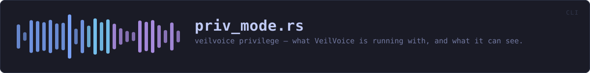

crates/veilvoice-cli/src/priv_mode.rs
veilvoice-cli · 46 lines · read the source here · or on GitHub
veilvoice privilege — what VeilVoice is running with, and what it can see.
In plain words
Most of VeilVoice needs no special permissions. The parts that watch your machine see more when it is run as an administrator, and this says which of those you are getting. It will not raise its own privileges for you — it prints the command and you decide.
WHAT THIS FILE CONTAINS
46 lines defining 1 function (1 public), 0 types and 0 constants. Everything below is read out of the source, so it cannot disagree with the code.
What happens when it runs. These are the ways in: public, and nothing else in this file calls them, so they are what an outside caller reaches first.
showline 14 — Report the privilege level and what it means.
WHAT CALLS WHAT
The functions this file defines, and the calls between them. An edge means the callee's name appears, called, inside the caller's body — a syntactic reading, not a type-resolved one.
The same graph as Mermaid source
%%{init: {"theme":"base","themeVariables":{"background":"#1a1b26","primaryColor":"#1f2335","primaryTextColor":"#c0caf5","primaryBorderColor":"#7aa2f7","secondaryColor":"#16161e","tertiaryColor":"#16161e","lineColor":"#737aa2","textColor":"#c0caf5","mainBkg":"#1f2335","nodeBorder":"#7aa2f7","clusterBkg":"#16161e","clusterBorder":"#2f3549","fontFamily":"ui-monospace, SFMono-Regular, Consolas, monospace","fontSize":"14px"}}}%%
flowchart TD
n_show(["show<br/>line 14"])
click n_show href "https://github.com/tilas01/veilvoice/blob/main/crates/veilvoice-cli/src/priv_mode.rs#L14" "open the source"
classDef entry fill:#1f2335,stroke:#7aa2f7,color:#c0caf5
class n_show entryThis site loads no third-party script, so it cannot run Mermaid; the diagram above is the same nodes and edges drawn by the generator instead. GitHub renders the source below directly.
ITEMS
| Item | Line | Documentation |
|---|---|---|
show pub fn | 14 | Report the privilege level and what it means. |